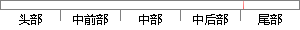

阈值），则接受这一对匹配点。 很显然 ，降低阈值
片段位置图

相似结果
相似片段：
定度量。取图像1中的某个关键点，并找出其与图像2中欧式距离最近的前两个关键点，在这两个关键点中，如果最近的距离除以次近的距离少于某个比例阈值，则接受这一对匹配点。降低这个比例阈值，SIFT匹配点数目会减少，但更加稳定，从而减少误判。SIFT特征向量匹配后的结果如图4-1所示。 图4-1 SIFT特征匹配结果 4.2图像融合技术 4.2.1旋转及缩
| 对比库： | WriteCheck云资源库 |
| 来源： | www.yangsky.com 查看来源 |
| 发布时间： | 2014-01-18 |
| 相似率 | 80% （严重抄袭） |